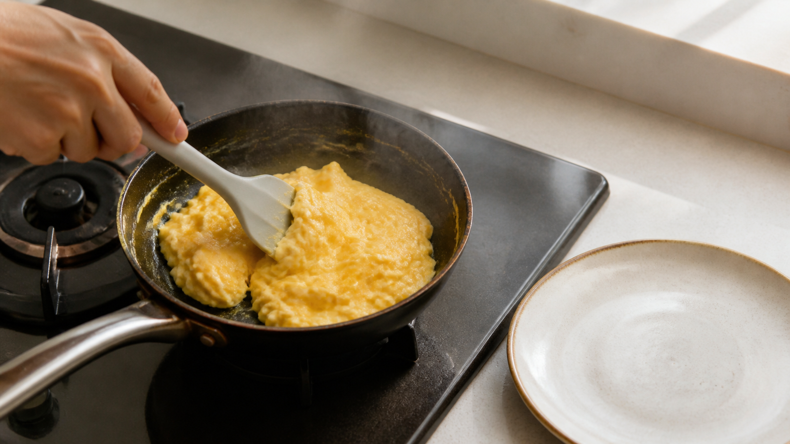

火を止めても、卵は止まらない。スクランブルエッグを余熱で仕上げる理由
スクランブルエッグを「ちょうどよく固まった」と思って火から下ろしたのに、皿へ運ぶころには少し乾いている。
卵は、火を止める合図を聞いてくれない。コンロを消しても、熱いフライパンから卵へ熱が移り続けるからだ。
今日の結論
スクランブルエッグは、鍋の中に生の液体がたまらず、全体がやわらかくまとまり始めたところで火を止める。そのまま10〜20秒ほど混ぜ、すぐ常温の皿へ移す。
ただし、これは「半生で食べる」方法ではない。米国農務省は卵料理を中心まで71.1℃に加熱し、スクランブルエッグは流れる状態を残さないよう案内している。安全を余熱だけに任せず、温度を測るなら火から下ろす前に71℃へ達したことを確認する。
火を止めても、フライパンはまだ熱源になる
コンロを消すと、新しい熱の供給は止まる。だが、フライパンそのものに蓄えられた熱は消えない。卵より熱い鍋底から、温度が近づくまで熱が移る。
料理でいう「余熱」だ。お風呂から出た直後も体が温かいのと同じで、熱源を離れた瞬間に温度変化が終わるわけではない。
卵を加熱すると、折りたたまれていたたんぱく質がほどけ、隣同士でつながる。これを熱変性（ねつへんせい）と呼ぶ。水を抱えた網が少しずつ増え、液体だった卵がやわらかな塊へ変わる。
卵白を毎分10℃の速さで温めた食品分析では、主な変化の山が65℃と84℃に現れた。低いほうはコンアルブミン、高いほうはオボアルブミンという別々のたんぱく質によるものだった。つまり、卵は一つの温度で急に全部が固まるのではない。複数の部品が、温度と時間に応じて順番に姿を変える。
「何度」だけでなく、「何秒いたか」も食感を変える
全卵を使った別の研究では、加熱温度を上げるほど、また加熱時間を長くするほど、できた卵の塊を切るのに必要な力が増えた。平たく言えば、高い温度に長く置くほど、卵はかたくなった。
ここが、火を止める時刻より「皿へ移す時刻」が大事な理由だ。
火を止めても熱いフライパンに30秒、1分と残せば、卵はさらに熱を受ける。特に厚い鉄やステンレスの鍋、大きく予熱した鍋は熱を多く抱える。一方、薄い鍋や少量の予熱なら変化は小さくなる。家庭の鍋をまたいで「必ず30秒」と決められない。
スクランブルエッグの加熱を扱った2024年の研究でも、卵は鍋底に近い部分から先に固まり、蒸気量を変えると形ややわらかさが変わった。研究は業務用の連続調理装置で、家庭の余熱時間を比べたものではない。それでも、卵の仕上がりが「熱の強さ」と「どこへ熱が届くか」に左右されることは見える。
2個の卵で、余熱の数十秒を使う
材料（1人分）
- 卵 2個
- 塩 ひとつまみ（約0.5g）
- 無塩バター 5g
作り方
- 卵と塩を、白身の筋が大きく残らない程度まで溶く。常温の皿を用意しておく。
- 直径20cmほどのフライパンを弱めの中火にかけ、バターを溶かす。焦がさない。
- 卵を流し入れ、耐熱のへらで鍋底をゆっくりこする。外側から中央へ、固まった部分と液体を入れ替える。
- 鍋の中に流れる卵液がたまらず、全体がやわらかい塊になったら火を止める。温度計を使う場合は、ここで全体を混ぜて71℃以上を確認する。
- 火を止めたまま10〜20秒混ぜ、表面につやが残るうちに皿へ移す。鍋の中へ置いたままにしない。
牛乳や生クリームを加えると、水分量と固まり方が変わる。まずは卵、塩、バターだけで、自分の鍋の余熱を知るほうが比較しやすい。
「火を止める」と「皿へ移す」を分けて比べる
次に作るときは、2回だけ条件を変えてみよう。
1回目は、好みの固さまで火にかけてから皿へ移す。2回目は、それより少し早く火を止め、10〜20秒混ぜてから皿へ移す。食べる前に、表面のつや、塊のやわらかさ、皿に水が出ていないかを比べる。
差が大きければ、その鍋は余熱が強い。2回目でも乾くなら、火を止めた後の時間を短くするか、冷たい皿へ早く移す。逆に流れる液体が残るなら、火を止めるのが早すぎる。再び加熱し、安全な温度まで仕上げる。
余熱は、食中毒対策の代わりにはならない
生の殻付き卵には、少数ながらサルモネラが含まれる可能性がある。米国農務省は、卵と卵料理を中心まで71.1℃に加熱し、スクランブルエッグを流れる状態で出さないよう案内している。
乳幼児、妊娠中の人、高齢者、免疫機能が弱い人へ出す場合は、とくに温度計で確認するか、低温殺菌済みの卵製品を使う。作ったらすぐ食べる。残す場合は2時間以内に冷蔵し、食べるときは十分に再加熱する。
数十秒は、魔法の数字ではない
今回確認できた研究は、卵たんぱく質が温度と時間で固くなること、加熱の届き方が食感を左右することを支えている。一方で、「家庭のすべてのフライパンで火を止めてから何秒が最適か」を直接比べた試験は確認できなかった。
だから、使える結論はこうなる。
火を止めるだけで完成にしない。余熱で混ぜる時間と、皿へ移す時刻までを調理に含める。
まずは10〜20秒。自分の鍋で一度だけ早めに火を止め、仕上がりを比べれば、朝の卵はかなり安定する。
参考文献
- Donovan JW, Mapes CJ, Davis JG, Garibaldi JA. *A differential scanning calorimetric study of the stability of egg white to heat denaturation*. Journal of the Science of Food and Agriculture. 1975;26(1):73-83. https://doi.org/10.1002/jsfa.2740260109
- Beveridge T, Ko S. *Firmness of Heat-Induced Whole Egg Coagulum*. Poultry Science. 1984;63(7):1372-1377. https://doi.org/10.3382/ps.0631372
- Xue L, et al. *Design and test of steam-injected continuous scrambled egg device*. Current Research in Food Science. 2025;10:100948. https://doi.org/10.1016/j.crfs.2024.100948
- U.S. Department of Agriculture, Food Safety and Inspection Service. *Safe Minimum Internal Temperature Chart*. https://www.fsis.usda.gov/food-safety/safe-food-handling-and-preparation/food-safety-basics/safe-temperature-chart
- U.S. Department of Agriculture, Food Safety and Inspection Service. *Where can I find more information about cooking eggs?* https://ask.fsis.usda.gov/article/Where-can-I-find-more-information-about-cooking-eggs
※本記事は家庭調理の食感と食品安全を扱う一般情報であり、個別の医療助言ではない。卵アレルギーがある人は食べないこと。